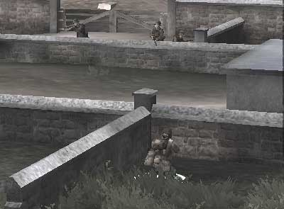

В игре “Brothers in arms”, довольно кстати неплохом 3D-шутере на основе реальных событий Второй мировой войны, впервые увидел режим так называемой тактической паузы. В любой момент игры, будь-то атака или оборона вы можете остановить действие и взглянуть на бой как бы со стороны. Чтобы поменять тактику или выработать стратегию.
Как жалко, что в жизни мы не можем воспользоваться подобным режимом.
